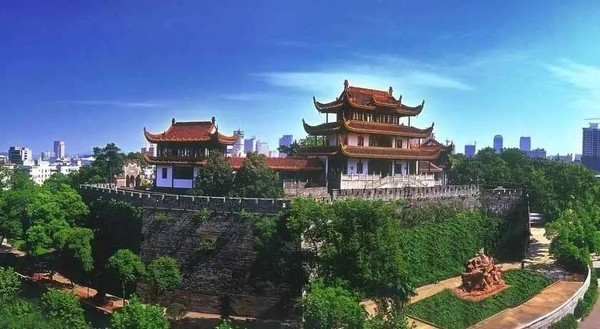
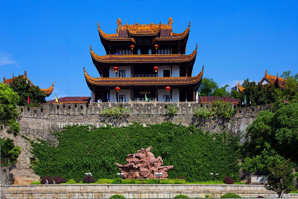
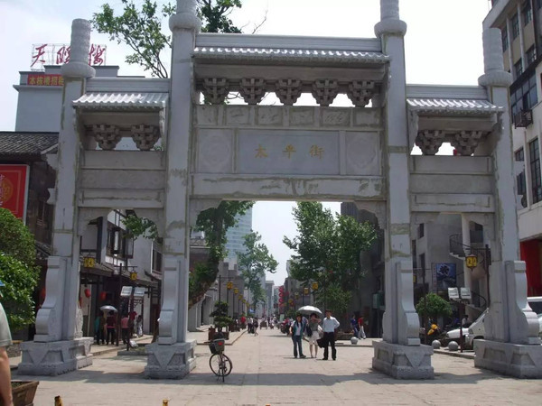
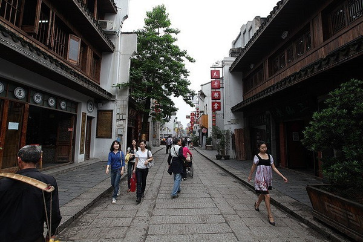
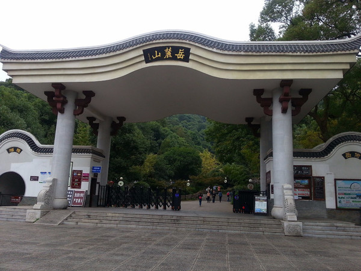
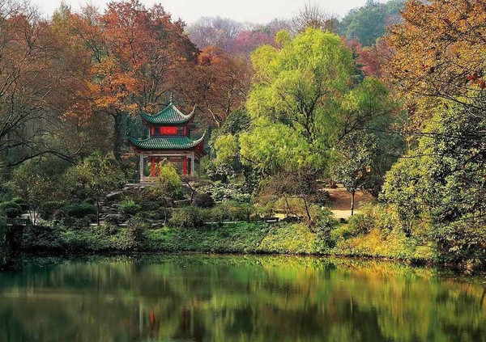
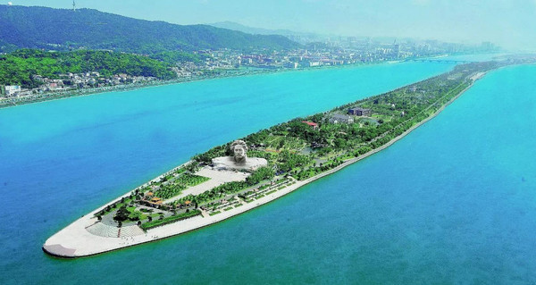
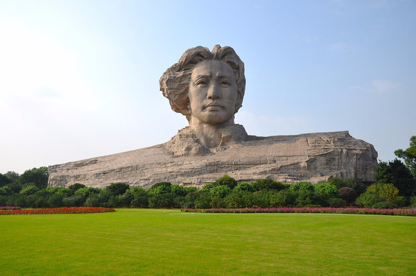

最美地标 - 天心阁 |
|
|  |  |
|
天心阁是长沙重要的名胜，也是长沙仅存的古城标志。它位于古城长沙地势最高的龙伏山巅，被古人视为呈吉祥之兆的风水宝地。 |
天心阁为仿明清建筑风格，主阁楼3层、高14.6米；南、北各有两个附阁（南屏、北拱），高10米；主阁和附阁之间以廊连接，其势雄伟壮观、气度恢弘。 |
最美老街 - 太平街 |
|
|  |  |
|
这条街我想无需介绍，在长沙呆过的人应该没人不知道。太平街，这样一条不长不宽的老街却承载着展示湖湘文化魅力、体现传统商业民俗风情的重任。 |
太平街是长沙古城保留原有街巷格局最完整的一条街。每走一步，都是对老长沙历史最真切的见证，小时候卖莲子的挑夫老了，我们也长大了，但街，还是那条街！ |
最美山麓 - 岳麓山 |
|
|
坐一趟地铁就能到达的长沙5A级景区，我想也只有岳麓山了。岳麓山位于古城长沙湘江西岸，为城市山岳型风景名胜区。 |
岳麓山所承载的文化和历史，也许只有去过很多很多次才能体会吧。景区内的岳麓书院、爱晚亭、麓山寺、云麓宫、黄兴墓，禹王碑，有哪一项不是对历史最好的诠释！ |
|  |  |
最美洲头 - 橘子洲 |
|
|
橘子洲，应该是熟悉得不能再熟悉了。作为世界上最大的内陆州，橘子洲给我们的更多是自然风光的馈赠。看着毛泽东意气风发眺望着湘江，眼前的这番美景多了一份情怀。 |
橘子洲，西望岳麓山，东临长沙城，四面环水，绵延数十里，狭处横约40米，宽处横约140米，形状是一个长岛，是长沙的重要名胜之一，也是国家5A级旅游景区和国家级重点风景名胜区。 |
|  |  |